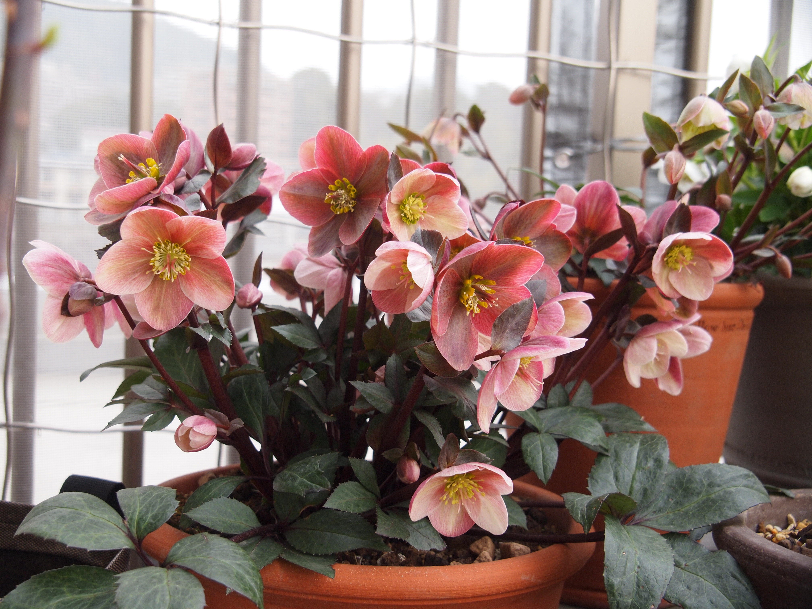
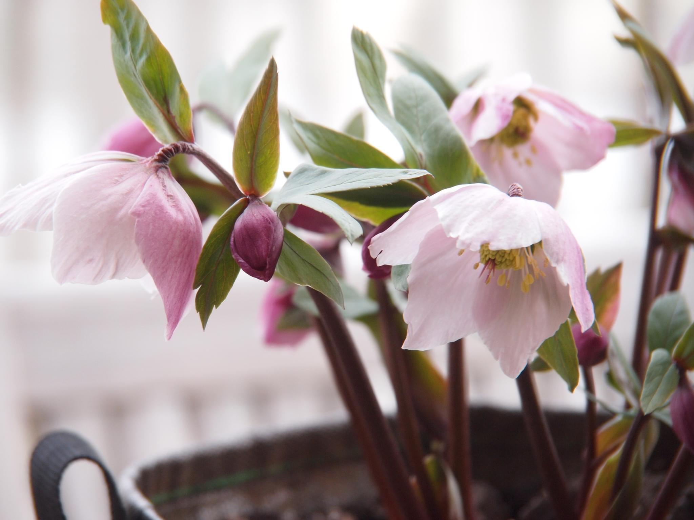
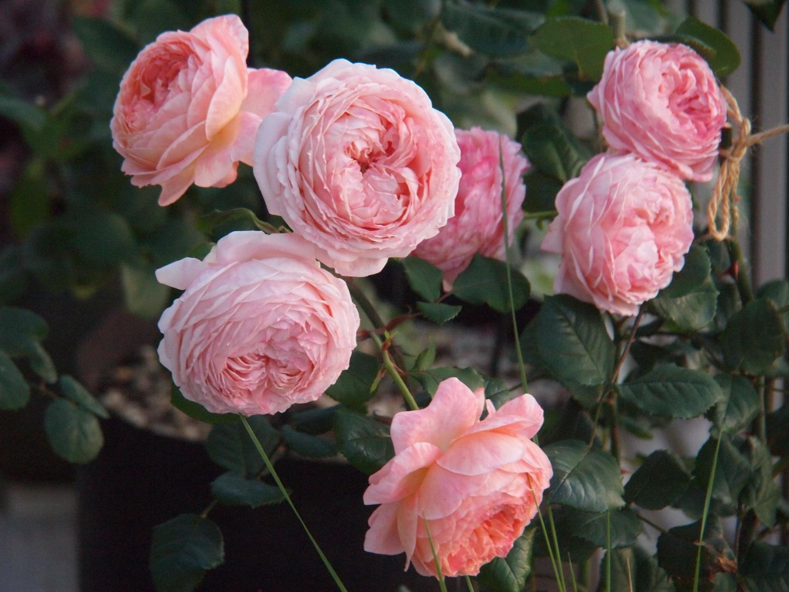
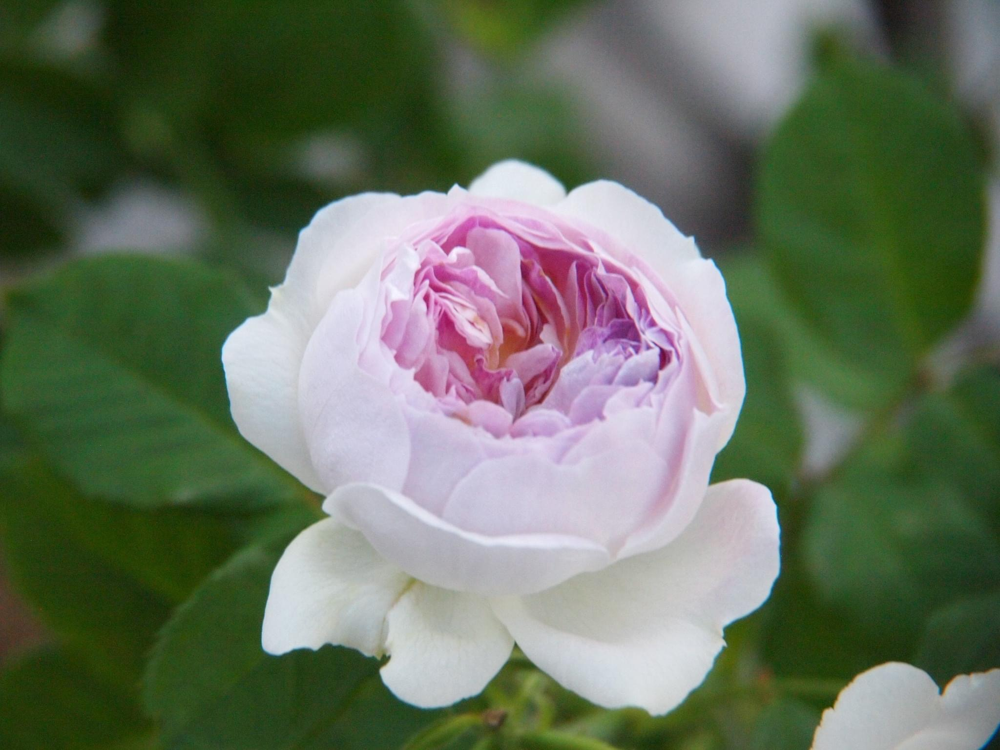
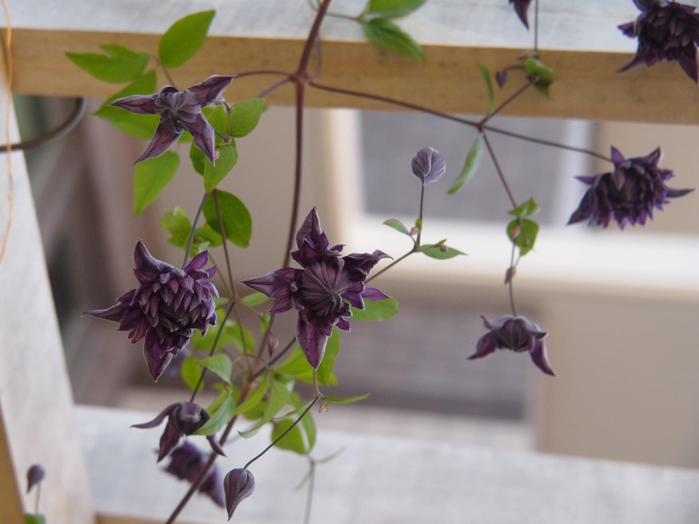
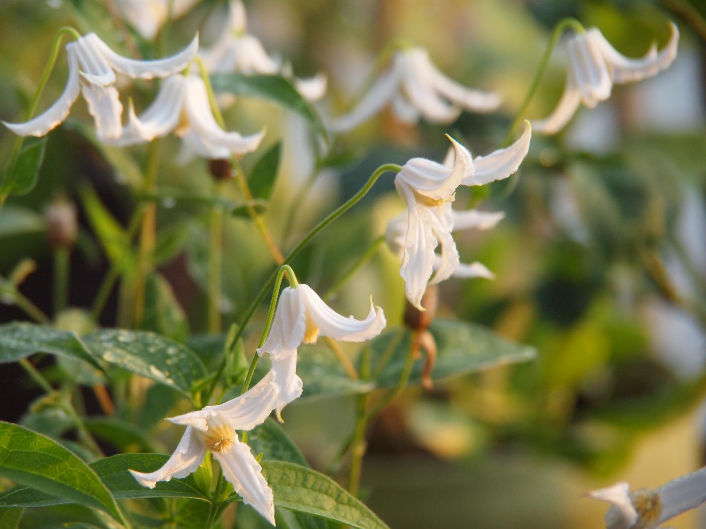

ピンクフロスト

強健、多花
絹

チベタヌス交配
コンフィチュール

仏のお菓子「コンフィチュールconfiture（仏）」が名前の由来。コンフィチュールとは、果物を砂糖などでかたちが残る程度に煮詰めたさらりとしたもの。ゼリー状に煮詰めて糖度が高いジャムjamとは少し違う。花色と花形などの「花の雰囲気」と「花名」、「香り」も加えてイメージが一致。フルーツの印象が際立ち、発表早々注目されている。海外のバラと比べて繊細な香りが多い日本のバラの中でも、フルーティな強い香りがあることも大きな特長。
ブルームーンストーン

ブルームーンストーンは、岐阜県にある河本バラ園のオリジナルローズです。河本バラ園は、50年以上バラ苗を生産している育種・苗生産会社で、このバラは日本を代表する女性育種家河本純子さんの作出です。同名のパワーストーンにちなみ名づけられました。パナップに似ている
フローレプレノ

花保ちはよくないが可憐な印象の人気品種。挿し木が成功しづらいためか販売頻度が少なくレア。
ベビーホワイト

クレマチスには珍しく香りのある品種。清涼感のある香りがする。